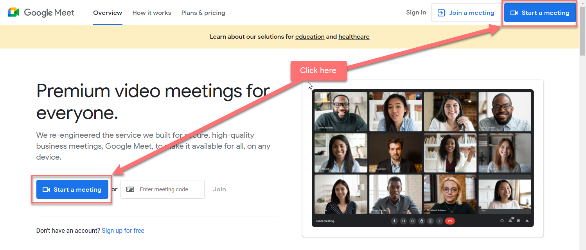

Pexip Infinity side
Adding the Google Meet tokens:
NOTE: You will need an additional concurrent Google Meet license for each token you add. You can check the number of licenses on you deployment from Platform --> Licenses, and look for the license type ghm.
- Navigate to Call Control --> Google Meet Access Tokens.
- Click Add Google Meet access token and enter the name vcX-ghm-trusted (where X is your VC number) and the trusted access token taken
previously from Google Workspace, then click Save and add another.
- Repeat the above process with the untrusted token (and an appropriate name) and click Save.
Creating Call Routing for Google Meet Trusted devices:
- Navigate to Services --> Call Routing and click Add Call Routing Rule.
- Configure the fields as described below (fields not mentioned are configurable per your choices):
- Name: Include the word Trusted to tell rules apart from each other.
- Select a priority that has not been used (e.g. 60) (be aware that more generic rules might match first…)
- Apply to Incoming gateway calls.
- Enable Match incoming calls from registered devices only.
- Destination alias RegEx match: Use the example below, changed as needed for your environment.
(<prefix_chosen>\d{3,9}|\d{13})($|(@<Pexip Infinity domain>$))
For example: (8\d{3,9}|\d{13})($|(@vc20-osl\.pexip\.net$))
The above RegEx will match the prefix you chose and configured in Google Workspace previously (in this case, 8), followed by 3-9 digits (which are randomly generated by Google for the meeting code), then an @ symbol, then the domain name of your group. It also will match on the 13-digit long meeting ID if used.
An incoming call to 81234@vc20-osl.pexip.net would match, but 812@vc20-osl.pexip.net, would not.
- Destination alias RegEx replace string: \1
The replace string refers to the first group in parentheses as hightlighted above (i.e. the prefix plus the 3-9 digit short meeting meeting code, or the 13 digit long ID) which is what Infinity sends to Google to look up a valid meeting.
- Call target: Google Meet meeting.
- Outgoing Location: DMZ
- Access token: Choose your trusted token.
- Enable the Treat as trusted checkbox.
Creating Call Routing for Google Meet Untrusted devices:
- Repeat the prior steps to create a second rule using your untrusted token, making appropriate adjustments to Name and Access token fields, and with the differences described below:
- Set a lower priority (higher number) than the rule above (e.g. 70) (also be aware that other more generic rules might match first 😉)
- Ensure that Match incoming calls from registered devices only is disabled (the default).
- Use the same RegEx match and replace values.
- Leave the Treat as trusted checkbox disabled.
Testing
To test, navigate to https://meet.google.com. You can start a new conference, by clicking Start a meeting.
Log in with your lab user credentials (see section #12).
NOTE: You may be prompted for a 2FA code again, so your trainer will be pinged if needed.

If you are already logged in, you will see a New Meeting button, then; you can start a meeting by clicking Start an instant meeting.

Once you are in the meeting, click the More phone number link in the Your meeting is ready box, then in the Third-party system tab, you should see the joining options for your group.
If you accidentally close this dialog, you can get to the same information by clicking the 'i' button in the control bar.

Make sure you test both trusted and untrusted routes (so using both a registered endpoint and the WebApp or a SIP/MS-SIP client).
In the real world, you probably would not want users to use the Infinity WebApp as they might as well navigate directly to Google Meet. So disabling any incoming call match for the "Match Infinity Connect (WebRTC/RTMP)" protocol would stop a WebApp user from gatewaying to Google Meet. However, it would also stop users of the desktop Connect clients, as this also uses WebRTC under the hood.
Google calendar invites use the long meeting ID. However, One Touch Join can currently parse Google HTML pages using the short ID, although it will likely use just the long ID going forward. These will be embedded in the calendar invite headers, providing a more scalable and robust joining option.